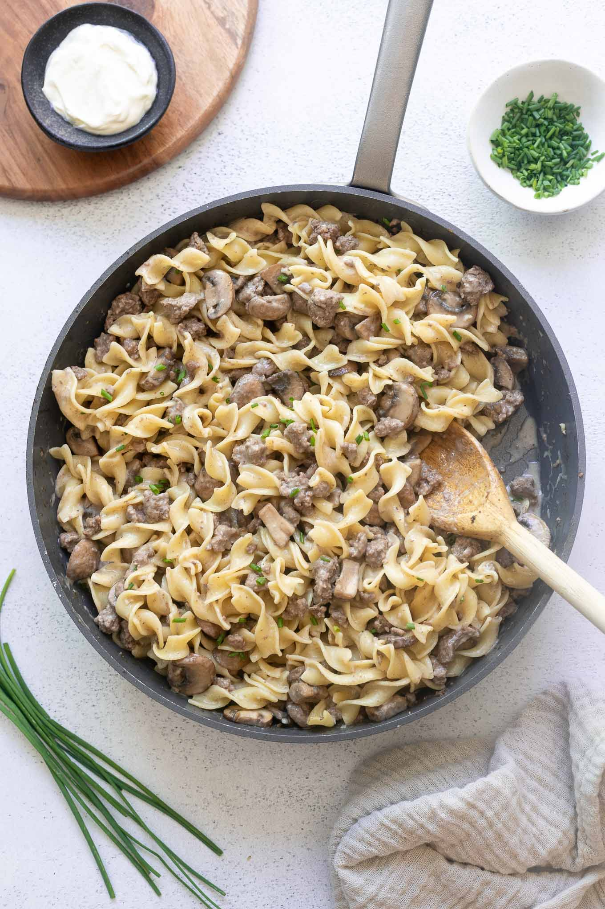
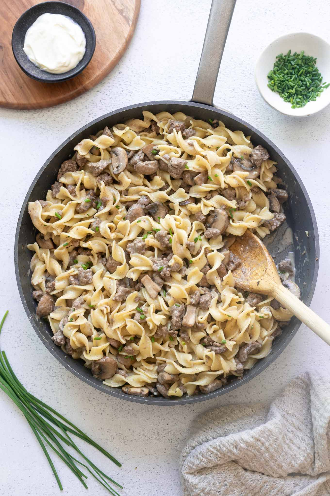

Friends
Friends are foods that are good, foods that should exist and be loved by all.
Beef Stroganoff
Beef stroganoff is just one of those foods that is easy to eat, it's good even despite my dislike for sour cream.
Friends are foods that are good, foods that should exist and be loved by all.
Beef stroganoff is just one of those foods that is easy to eat, it's good even despite my dislike for sour cream.